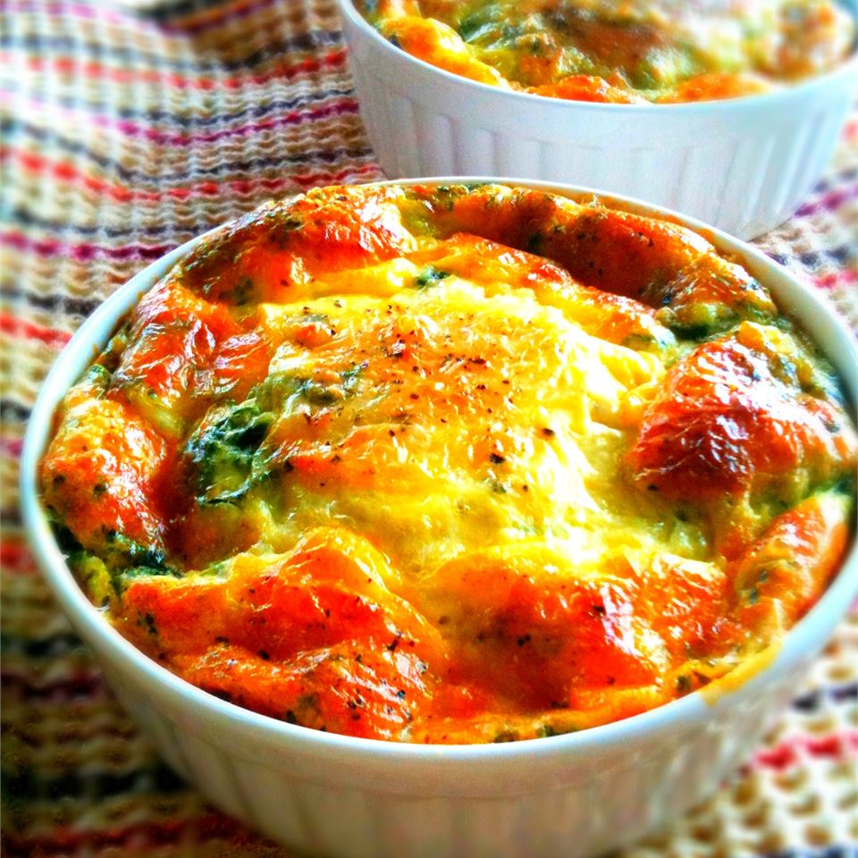

Quick Quiche

Description
When you don't have the time to make a pastry crust, try this quick breakfast or brunch idea. You may add any other goodies you like, such as ham, chicken, crab, shrimp, or broccoli.
Ingredients
- 8 slices bacon
- 4 ounces shredded swiss cheese
- 2 tablespoons butter, melted
- 4 eggs, beaten
- 1/4 cup finely chopped onion
- 1 teaspoon salt
- 1/2 cup all-purpose flour
- 1 1/2 cups milk
Directions
- Place bacon in a large, deep skillet. Cook over medium high heat until evenly brown. Drain, crumble and set aside.
- Preheat oven to 350 degrees F (175 degrees C). Lightly grease a 9 inch pie pan.
- Line bottom of pie plate with cheese and crumbled bacon. Combine eggs, butter, onion, salt, flour and milk; whisk together until smooth; pour into pie pan.
- Bake in preheated oven for 35 minutes, until set. Serve hot or cold.
Back to home page